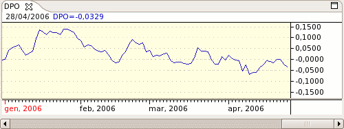

The Detrended Price Oscillator (DPO) allows the trader to eliminate the trend in prices, making it easier to spot cycles and determine whether a stock is overbought or oversold. Short term cycles add together like musical harmonics to create longer term cycles. By studying the shorter term harmonics of a long term cycle, turning points in the mmajor cycle can be determined. The DPO removes the longer term cycles from prices, making the shorter term cycles more visible.

Parameters